Unit 1
Introduction to Optimal Control, the Dynamic Programming Algorithm

4SC000, Q2 2026-2027
Duarte Antunes
Outline
- Classes of optimal control problems and applications
- Dynamic programming algorithm
- Dynamic programming equations
Optimal control
Optimality
- Useful design principle in many engineering contexts (optimize efficiency of a refrigerator, minimize the fuel consumption of a car, etc.).
- Nature is described by laws derived from optimality principles.
- We optimize every day when we make decisions (true?).
Optimal control
- Deals with problems in which optimal decisions or control actions are pursued over a time period in order to reach final and intermediate goals.
- Arises in the control of physical systems (e.g. mechanical, electrical, biological) and in many other contexts (e.g., economics, computer science, and game theory).
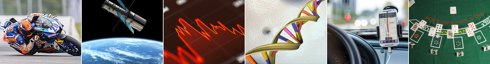
Photo credits (Wikimedia Commons): motorcycle racing, “Stepro”, CC BY-SA 4.0 – Hubble Space Telescope in orbit, ESA/Hubble, CC BY 2.0.
Static optimization
- Determine one optimal decision.
- Examples: decide on the price of a product, determine the slope of a straight line which best fits data, etc.
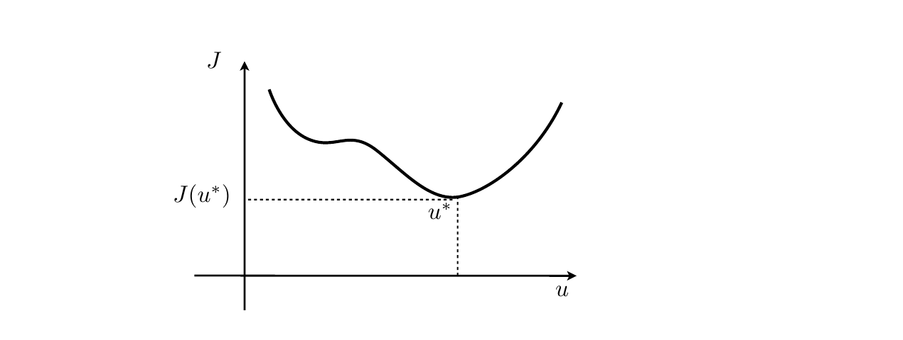
Optimal control
- Determine several optimal decisions over time.
- Decisions are functions of state, i.e., a control law to cope with disturbances.
- Examples: driving a car/bike in a race, positioning the tip of a robot arm in the presence of disturbances, playing chess, etc.
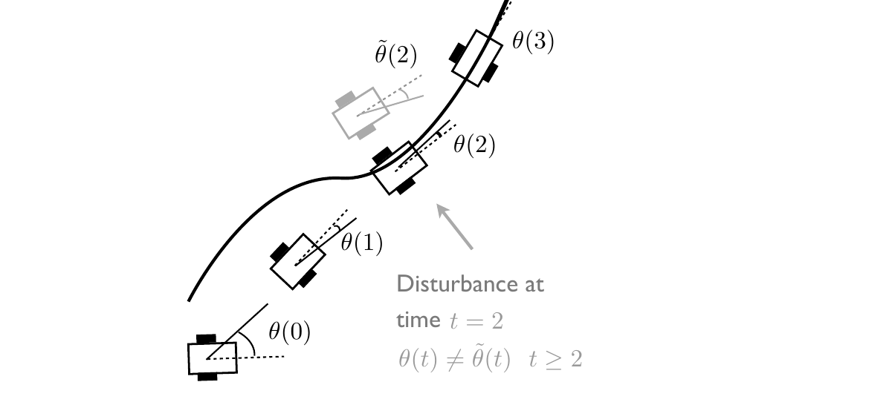
Optimal control formulation
Dynamic model
- Specifies the rules of the problem or the equations of the physical system.
- State: summarizes relevant information to make future decisions.
- Control actions: influence the evolution of the state over time.
- State evolution may be deterministic or stochastic (driven by disturbances).
Cost function
- Encapsulates the goals to be achieved in the problem.
- Typically additive over time and by convention should be minimized.
Goal:
Find a control policy which minimizes the cost.
- Policy: set of functions mapping the state at each instant of time to an action.
- Related problem: compute an optimal path/trajectory consisting of optimal decisions over time for a given initial state.
Optimal control problems
The course will start with problems where the state and input spaces are discrete, and then move to continuous (\(\mathbb{R}^n\)).
When these are subject to stochastic disturbances they are called Markov Decision Processes (MDPs).
| state space | Stochastic disturbances | |
|---|---|---|
| Discrete decision problems | Discrete (countable) | No |
| Discrete MDPs | Discrete (countable) | Yes |
| Continuous decision/control problems | Continuous | No |
| Continuous MDPs | Continuous | Yes |
Time is always discrete; the course will not focus on continuous-time decision (optimal control) problems – these will be converted to stage-decision problems or discrete optimization problems when they appear.
Discrete decision problems
Specified by a transition diagram with \(h-1\) decision stages.
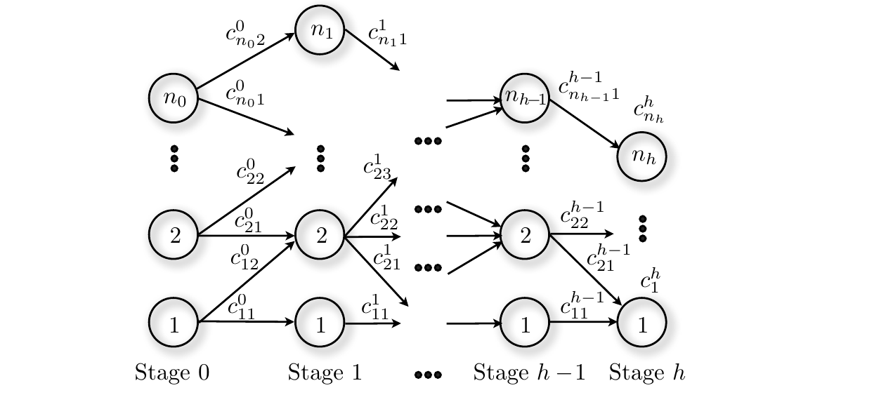
Transition diagram: circles = states at each stage, arrows = actions leading to next-stage states, \(c^k_{i,j}\) = cost of action \(j\) from state \(i\) at stage \(k\), \(c^h_i\) = terminal cost of state \(i\)
Discrete decision problems – challenges
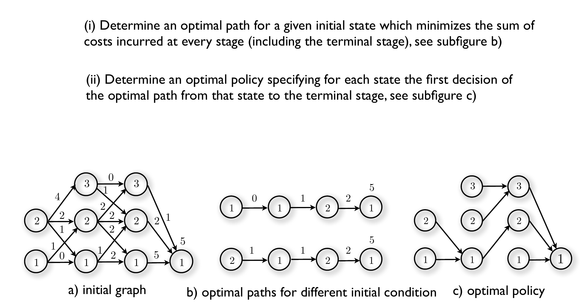
Inventory control
How to manage the supply of products in a shop? Overstock is prejudicial (physical space limitations, technological obsolescence, etc.) and understock undermines sales.
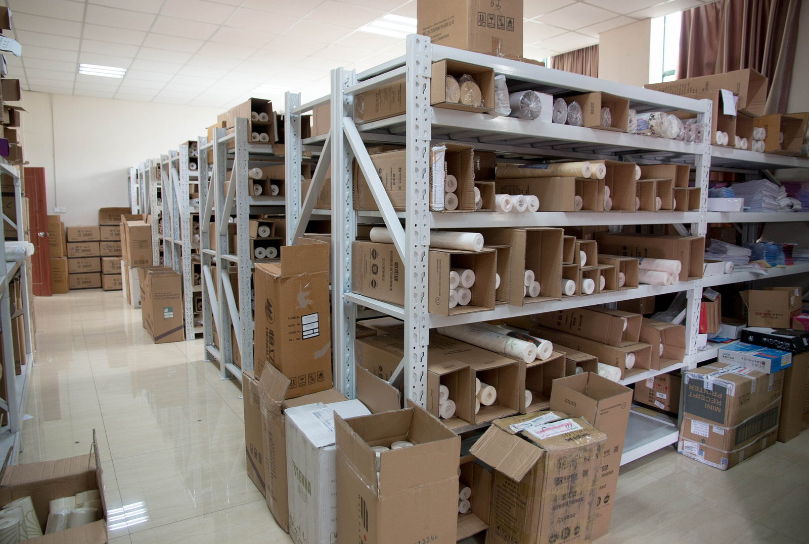
Shortest paths in graphs
What is the shortest distance from Bucharest to Lugoj?
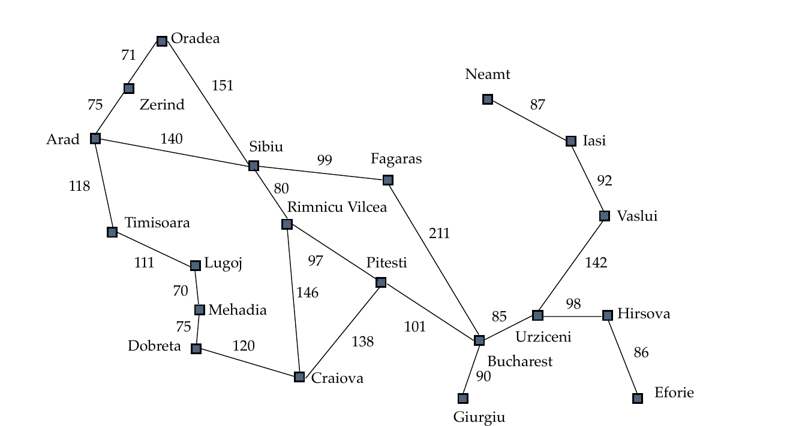
Road map of Romania (Source: Artificial Intelligence: A Modern Approach, Russell & Norvig, 3rd ed., 2016)
Robot path planning
What is the shortest path for a robot to go from point A to B in a grid map representation of the world?
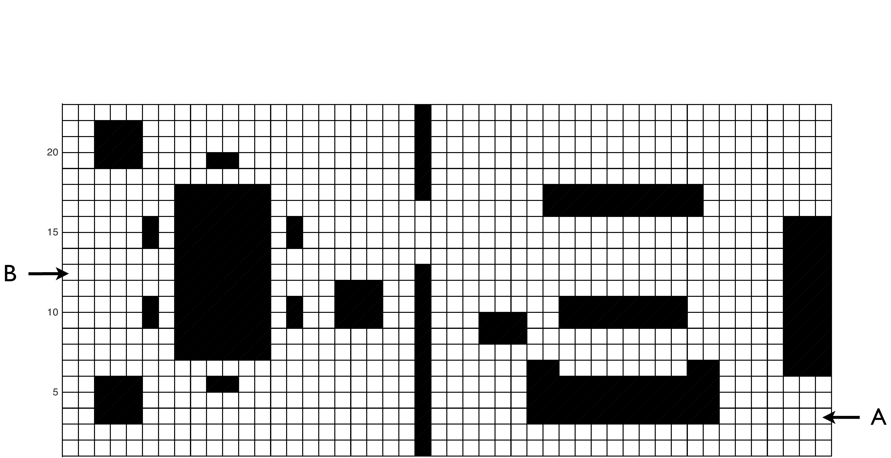
Games
How to make profit in expectation in a game such as blackjack?
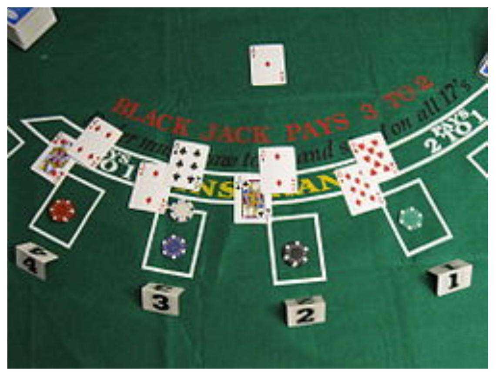
Planning with uncertainty
How to plan your day in Efteling to maximize your time in your favourite attractions given (stochastic) models of waiting times in queues?
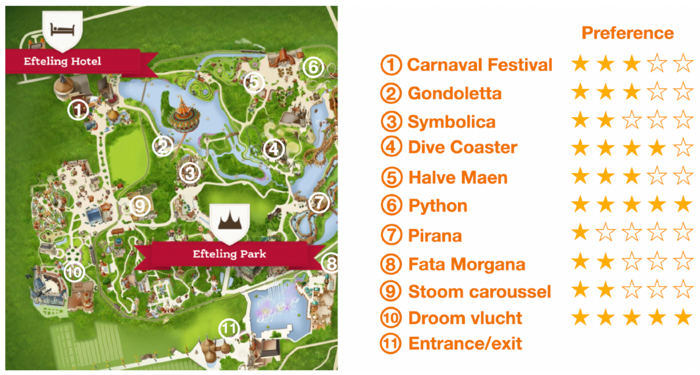
Continuous decision problems
Dynamic model: \(x_{k+1} = f_k(x_k,u_k)\), \(k\in\{0,\dots,h-1\}\)
Cost function: \(\sum_{k=0}^{h-1} g_k(x_k,u_k) + g_h(x_h)\)
Goals
find policy \(\pi = \{\mu_0,\dots,\mu_{h-1}\}\), \(u_k = \mu_k(x_k)\), that leads to the minimum cost for every initial condition.
find trajectory \(\{(x_0,u_0),(x_1,u_1),\dots,(x_{h-1},u_{h-1})\}\) that leads to the minimum cost for a given initial condition.
(\(x_k\) is the state and \(u_k\) is the control input at time \(k\).)
Continuous decision problems (cont.)
Generalization of the discrete optimization problem to general state and input spaces, e.g., \(\mathbb{R}^n\).
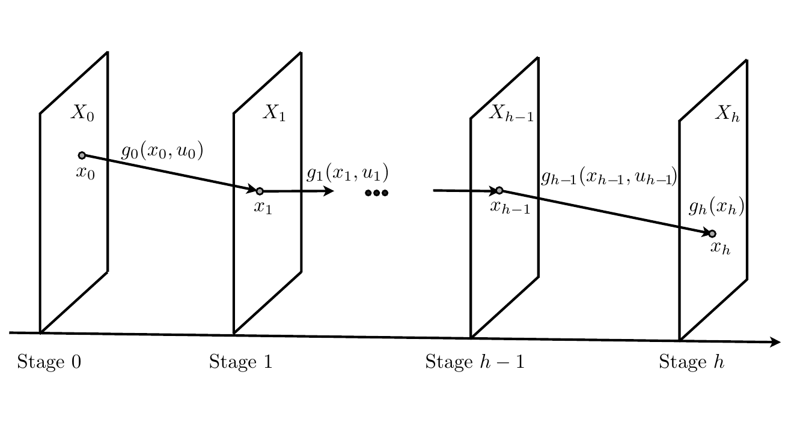
Digital control
Prime application: how to design a digital controller for a physical system?
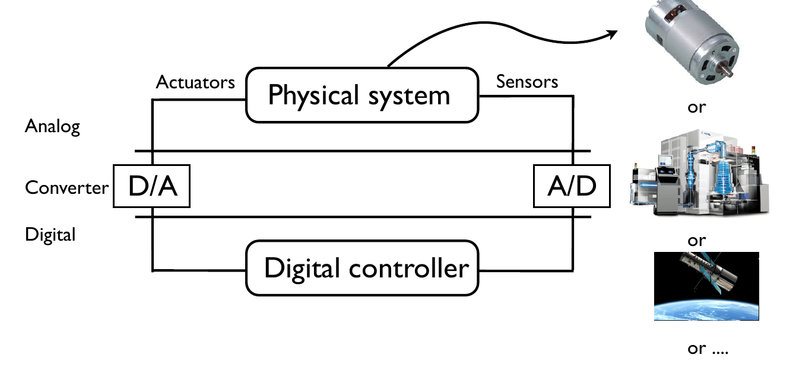
Physical system with D/A, A/D, sensors, actuators, digital controller. Several variants: full state available or only an output; system with or without disturbances, etc.
Mixing
How to mix two fluids in minimum time?
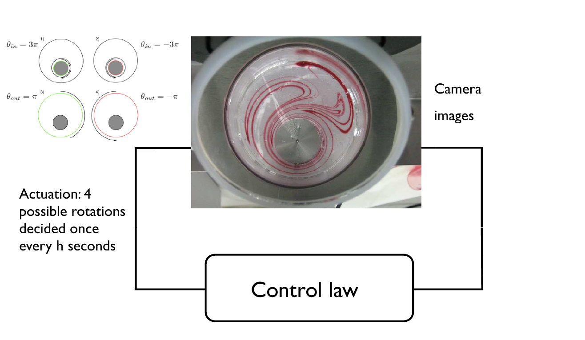
Camera + actuator based mixing control. Actuation: 4 possible rotations decided once every \(h\) seconds.
Digital control of a unicycle robot
Given a unicycle robot with constraints on speed and rotation rate and controlled digitally, how to perform a maneuver in minimum time?
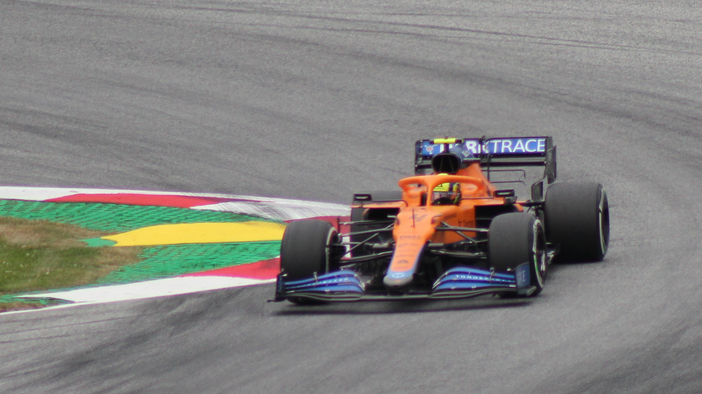
“FIA F1 Austria 2021 Nr. 4 Norris (corner),” Steffen Prößdorf (“Stepro”), CC BY-SA 4.0, Wikimedia Commons.
Quadcopter control
How to fly a quadcopter taking into account wind preview information?
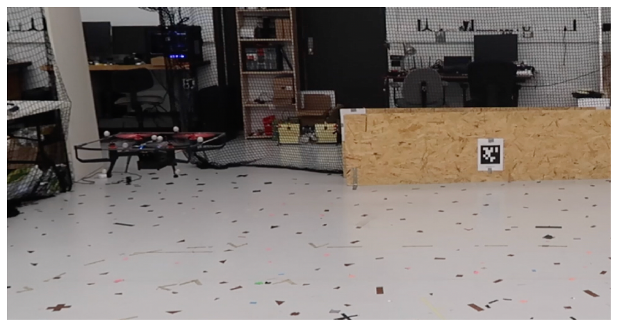
Minimum energy control
Satellites have limited fuel, so minimizing control energy/fuel is critical. How to move a satellite from one orbit to another in minimum energy?
Hubble Space Telescope in orbit, ESA/Hubble, CC BY 2.0, Wikimedia Commons.
Minimum time robot arm control
How to move the tip of a robot arm in minimum time?
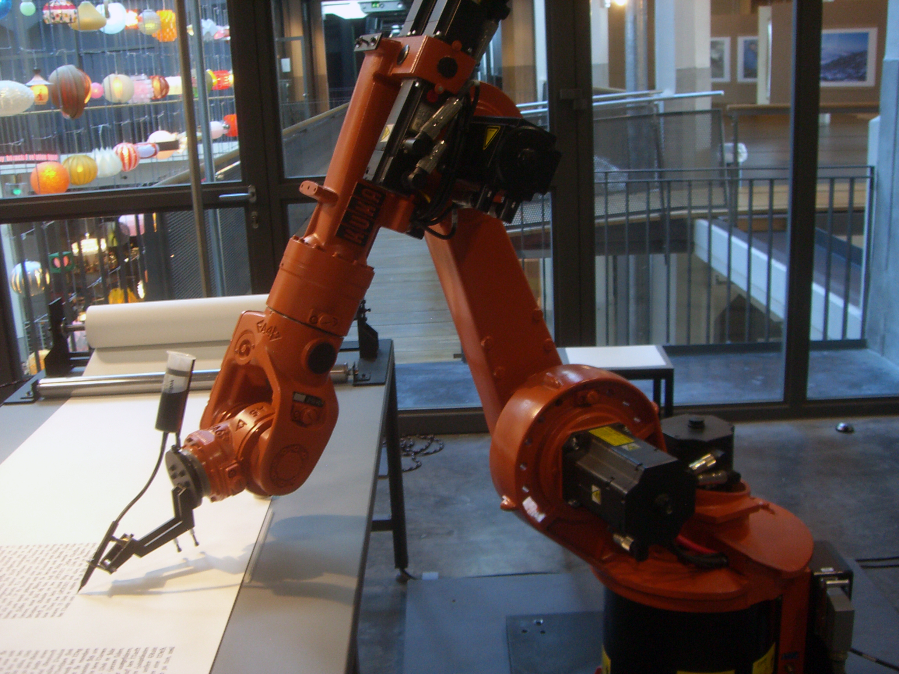
“KUKA Industrial Robot Writer,” Mirko Tobias Schäfer, CC BY 2.0, Wikimedia Commons.
Continuous-time optimal control problems
Dynamic model: \(\dot{x}(t) = f(t,x(t),u(t))\), \(x(0)=x_0\), \(t\in[0,h]\)
Cost function: \(\int_0^h g(t,x(t),u(t))\,dt + g_h(x(h))\)
Goals:
- Find a feedback policy minimizing the cost function for every initial condition.
- Find a control input minimizing the cost function.
Continuous-time optimal control problems (cont.)
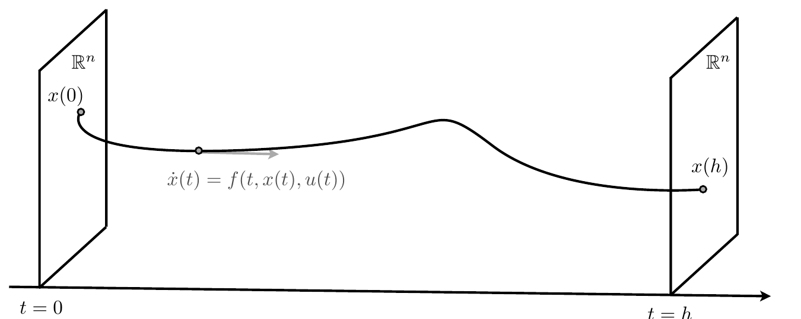
Most applications in control systems: motion control, aerospace, etc. When these arise we will approximate them as discrete-time decision/optimal control problems.
Reinforcement learning setting
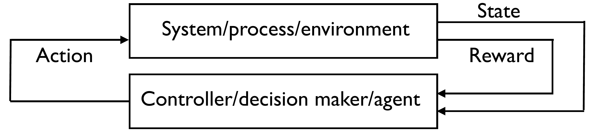
- Dynamic model: none! Only the real system or a simulator that can be run is available. Still, for analysis, a model of the form above is subsumed.
- Reward/cost function: encapsulates the goals to be achieved in the problem, obtained through the agent’s interaction with the environment/simulator.
- The distinguishing feature of RL (vs. the classical DP setting above): the transition model/dynamics are unknown to the decision-maker and must be learned from interaction, rather than given.
Goal: find a control policy (function from states to actions) which minimizes the cost based on data (trial and error).
Learn in Pacman games
Learn optimal policy for next move (up/down/left/right) for the ghost to catch Pacman in minimum time.
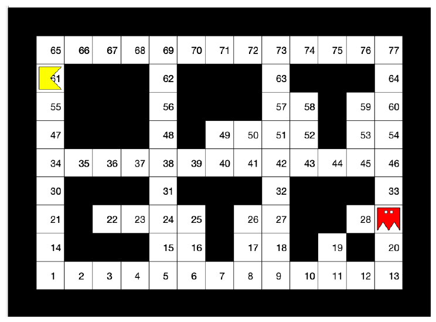
Control a robot arm
How to control a robot arm to perform a ball-balancing task.
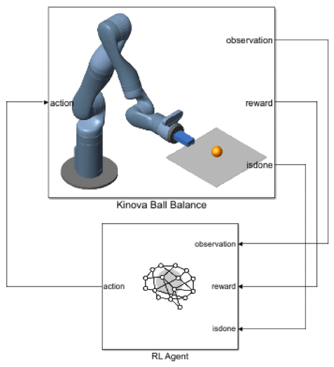
Figure: MATLAB Reinforcement Learning Toolbox, MathWorks.
Outline
- Classes of optimal control problems and applications
- Dynamic programming algorithm
- Dynamic programming equations
Dynamic programming
- Dynamic programming is an approach to solve optimal control problems.
- It allows finding functions mapping states into actions. These functions are called policies or control laws.
- One can use these functions to control a system in the presence of disturbances.
- It also allows computing optimal paths/trajectories, although, as we shall see, other methods might be more efficient.
The principle of optimality
Example: the shortest route from Eindhoven to Paris passes through Antwerp. Then the piece of the route from Antwerp to Paris is the shortest route between the two cities.
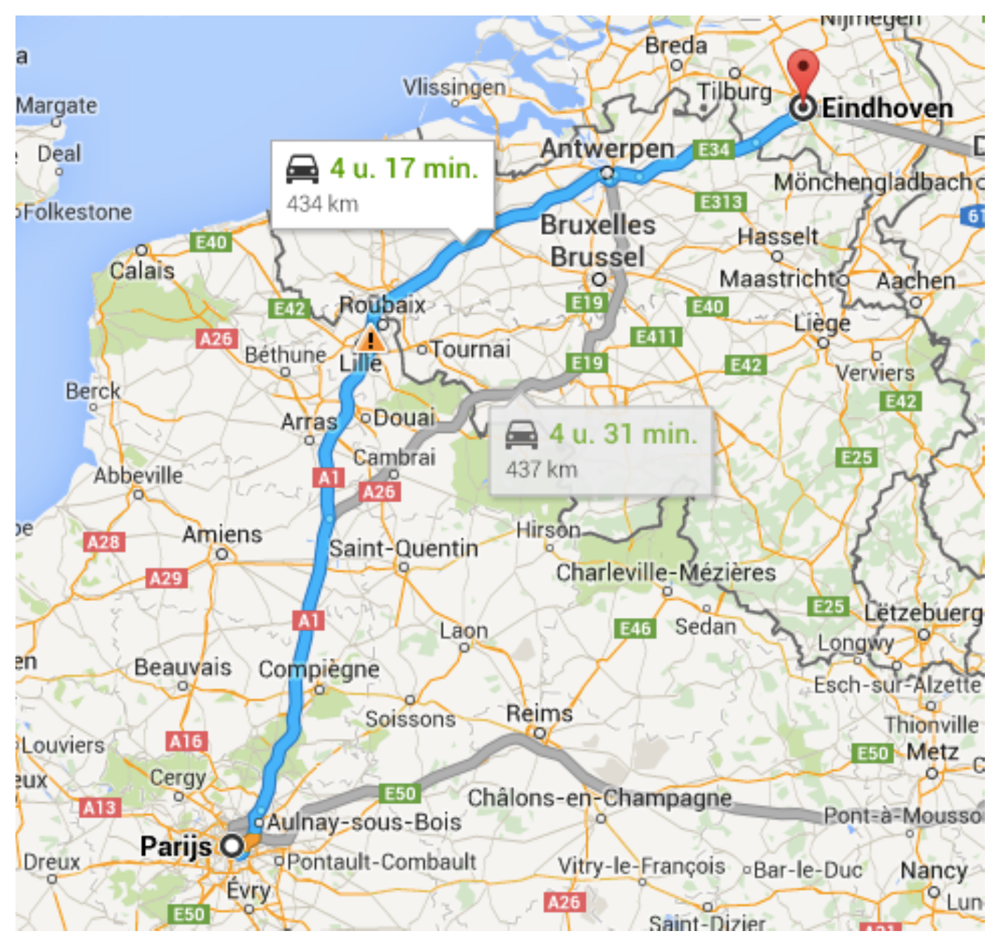
The principle of optimality
The tail of an optimal path is also optimal.
Given an optimal path for a discrete optimization problem from stage \(0\) to stage \(h\), consider the state at stage \(j\) belonging to the optimal path. Then the decisions along the optimal path from stage \(j\) to \(h\) are also optimal for the subproblem starting at that state at stage \(j\).
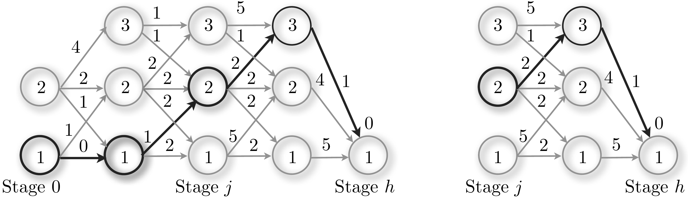
The principle of optimality also applies to stage-decision problems and continuous-time optimal control problems, and is the basis of the dynamic programming algorithm.
Proof of the principle of optimality
1. Consider an optimal path from stage \(0\) to stage \(h\).
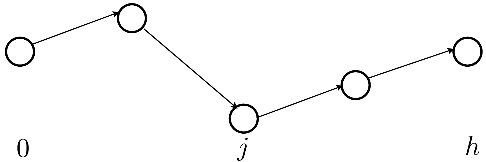
\[\text{cost} = \text{cost}_{[0,j)} + \text{cost}_{[j,h]}\]
2. Suppose that the piece of the path from stage \(j\) to stage \(h\) is not optimal.
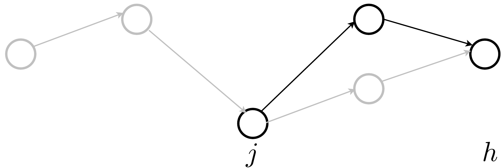
\[\underline{\text{cost}}_{[j,h]} < \text{cost}_{[j,h]}\]
3. Then there exists a path with smaller cost from stage \(0\) to stage \(h\) – contradiction!
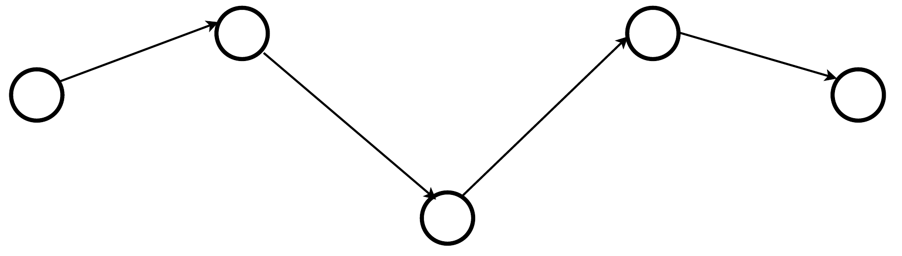
\[\text{cost}_{[0,j)} + \underline{\text{cost}}_{[j,h]} < \text{cost}_{[0,j)} + \text{cost}_{[j,h]}\]
Dynamic programming algorithm
For discrete decision problems:
- Start at the final decision stage \(h\) and set the cost-to-go at stage \(h\) equal to the terminal cost.
- For every state at stage \(k < h\), compute the optimal action by minimizing (immediate cost + cost-to-go of the resulting next state). Denote the minimum value the cost-to-go at stage \(k\).
- Repeat step 2 moving backward through \(k = h-1, h-2, \dots, 0\).
Example – iteration 1 (stage 3)
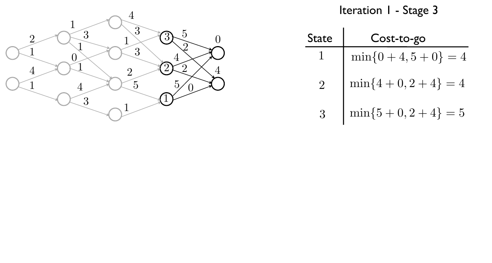
Example – iteration 2 (stage 2)
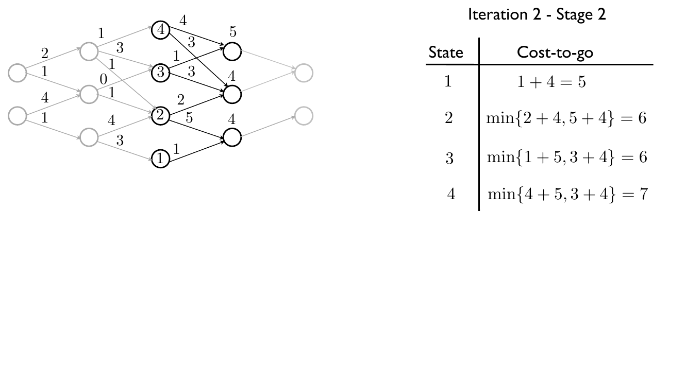
Example – iteration 3 (stage 1)
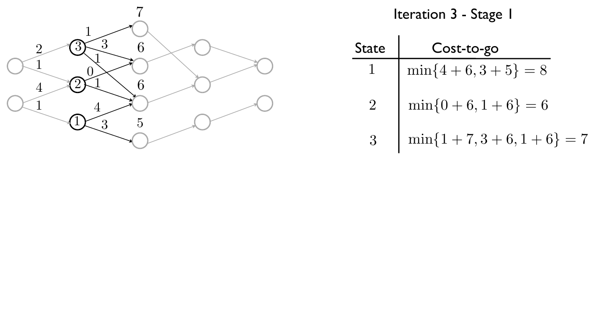
Example – iteration 4 (stage 0)
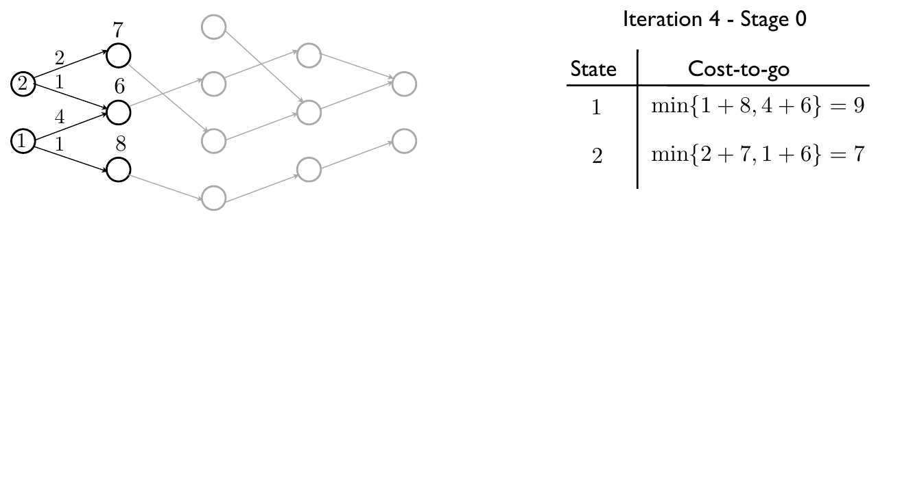
Optimal policy and optimal paths
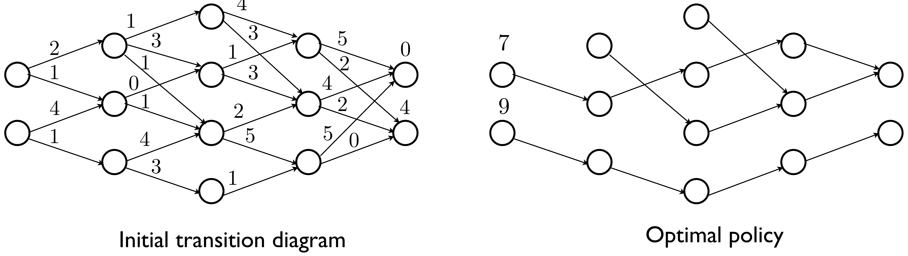
Optimal policy
While running the DP algorithm, for each state at each stage a decision is made to compute the cost-to-go. That decision is precisely the decision specified by the optimal policy at that state/stage.
Optimal path
- For a given initial state, follow the arrows leading to the final stage. This is the optimal path.
- The cost-to-go at stage 0 of that initial state coincides with the cost of the optimal path.
Non-uniqueness
If more than one option has the same cost while running the dynamic programming algorithm, simply pick one of the options. In the end, one optimal policy is obtained (while several may be optimal).
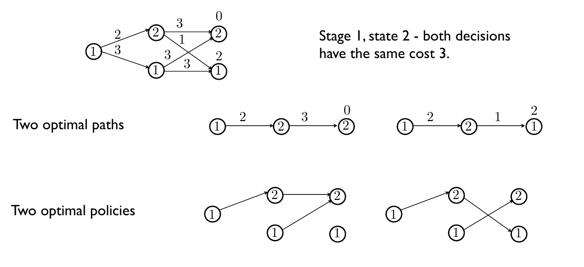
Inventory control – formulation
Controlling the supply of one product.
Dynamic model: \(x_{k+1} = \max\{x_k + u_k - d_k, 0\}\), \(u_k \in \{0,1,\dots,N-x_k\}\)
Cost: \(\sum_{k=0}^{h-1} g_k(x_k,u_k) + g_h(x_h)\), where \[ g_k(x_k,u_k) = \big(c_1(x_k) + c\,u_k + c_{tr}\lVert u_k\rVert_0\big) - p\min\{d_k, x_k+u_k\}, \qquad \lVert u_k \rVert_0 = \begin{cases} 0 & \text{if } u_k = 0 \\ 1 & \text{if } u_k \neq 0\end{cases} \]
where \(x_k\) = number of items, \(u_k\) = supply, \(d_k\) = demand, \(N\) = capacity, \(g_h\) = terminal cost, \(p\) = selling price, \(c\) = purchase price, \(c_{tr}\) = transportation price, \(c_1\) = storage cost.
Formulation – transition diagram
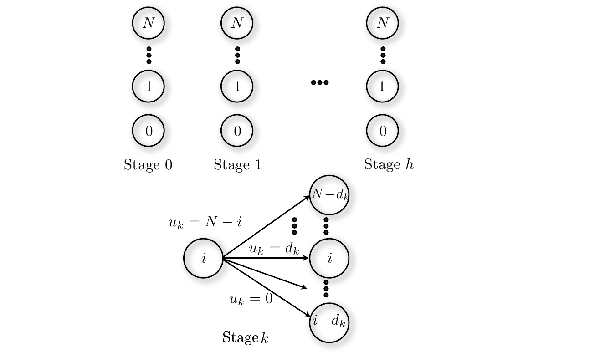
Circles at each stage indicate number of items; supplies determine transitions
Inventory control – numerical example
- Number of stages \(h=4\)
- Capacity \(N=4\)
- Demand \(d_0=d_1=2\), \(d_2=d_3=1\)
- Selling price \(p=10\), purchase price \(c=5\), transportation price \(c_{tr}=0.5\)
- Storage cost \(c_1(i) = 0.2i\), \(i \in \{0,\dots,N\}\)
- Terminal cost \(g_4(i) = -r_{i+1}\), \(i\in\{0,\dots,4\}\), \(r=[0\ 4.8\ 9.6\ 14.4\ 19.2]\)
Some iterations
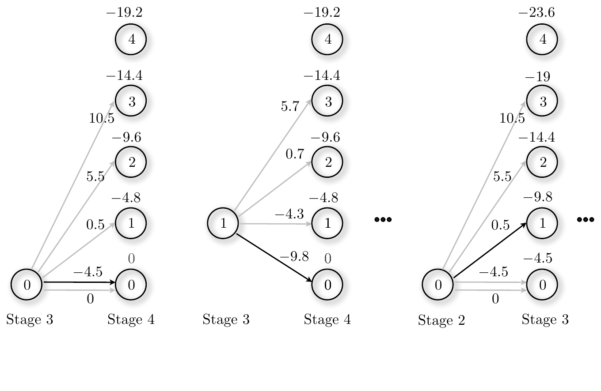
Backward recursion for the inventory example
Final policy and optimal path
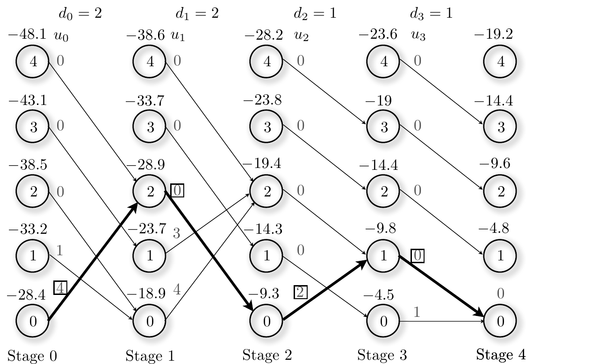
Outline
- Classes of optimal control problems and applications
- Dynamic programming algorithm
- Dynamic programming equations
Equivalent formulation
Dynamic model: \(x_{k+1} = f_k(x_k,u_k)\), \(k\in\{0,\dots,h-1\}\)
Cost: \(\sum_{k=0}^{h-1} g_k(x_k,u_k) + g_h(x_h)\)
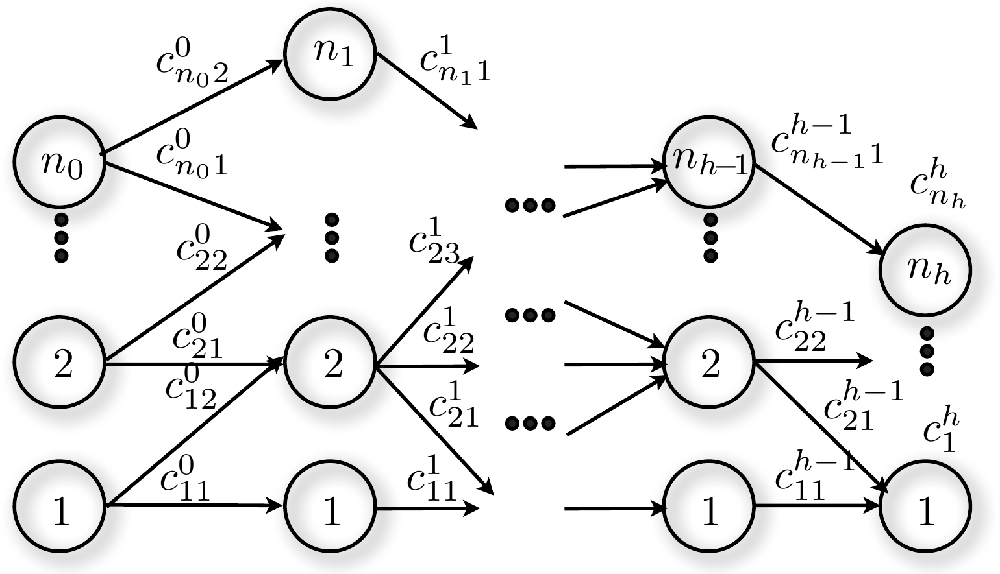
State: \(x_0 \in \{1,\dots,n_0\}\), \(x_1 \in \{1,\dots,n_1\}\), …, \(x_h \in \{1,\dots,n_h\}\)
Action: \(u_0 \in \{1,\dots,m_{0,x_0}\}\), \(u_1 \in \{1,\dots,m_{1,x_1}\}\), …
Cost: \(g_0(x_0,u_0) = c^0_{x_0,u_0}\), \(g_1(x_1,u_1) = c^1_{x_1,u_1}\), …, \(g_h(x_h) = c^h_{x_h}\)
Dynamic programming algorithm in the new formalism
Dynamic programming (DP) equations. Start with \(J_h(i) = g_h(i)\) for every \(i\), and for each decision stage, starting from the last and moving backward, compute \[ J_k(i) = \min_{j \in U_k(i)} \; g_k(i,j) + J_{k+1}(j) \] and \(\mu_k(i) = j^\star\), where \(j^\star\) is a minimizer in the DP equation above.
Richard E. Bellman
Historical note
Dynamic programming was proposed in the 1940s by Richard E. Bellman.
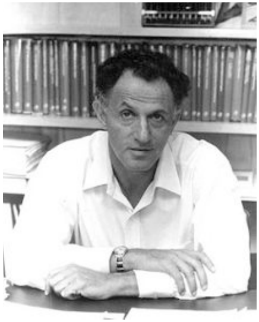
Photo: via Wikipedia.
“I was intrigued by dynamic programming. It was clear to me that there was a good deal of good analysis there. Furthermore, I could see many applications. It was a clear choice. I could either be a traditional intellectual, or a modern intellectual using the results of my research for the problems of contemporary society.”
– R. E. Bellman (1920-1984)
Summary
- Optimal control: determine several optimal decisions over time and as a function of the state.
- Optimal control problems: three classes (discrete optimization, stage-decision, continuous-time control), many applications.
- Dynamic programming: optimal decisions computed backward in time via the principle of optimality; yields both the optimal policy and the optimal cost-to-go.
Appendix A
Inventory control with uncertainty
Coping with disturbances
In the context of the inventory control example
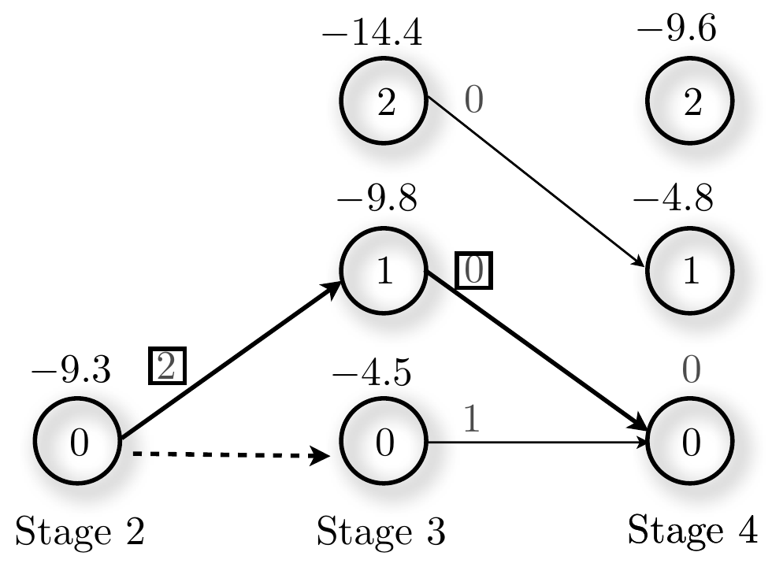
What if the demand is \(d_2=2\) instead of the expected \(d_2=1\)?
- The state at stage 3 is then \(x_3=0\) instead of \(x_3=1\).
- Open loop: blindly pick \(u_3=0\) as initially planned.
- Closed-loop (using DP policy): pick \(u_3=1\).
Open loop vs closed loop
Costs
Open loop \(g_0(0,4)+g_1(2,0)+g_2(0,2)+g_3(0,0)+g_4(0)\)
\(0.5 \;-\; 19.6 \;+\; -9.5 \;+\; 0 \;+\; 0 = -28.6\)
Closed loop \(g_0(0,4)+g_1(2,0)+g_2(0,2)+g_3(0,1)+g_4(0)\)
\(0.5 \;-\; 19.6 \;+\; -9.5 \;+\; -4.5 \;+\; 0 = -33.1\)
Expected cost if \(\text{Prob}[d_2=1]=0.5,\ \text{Prob}[d_2=2]=0.5\)
Open loop \(0.5\times(-28.4) + 0.5\times(-28.6) = -28.5\)
Closed loop \(0.5\times(-28.4) + 0.5\times(-33.1) = -30.75\)
4SC000 – Optimal Control and Reinforcement Learning